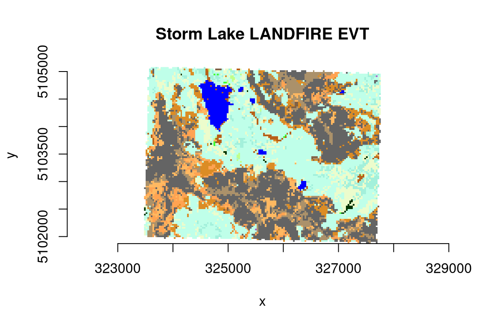

A GDAL Raster Attribute Table (RAT) provides attribute information about pixel values. Raster attribute tables can be used to represent histograms, color tables, and classification information. Each row in the table applies to either a single pixel value or a range of values, and might have attributes such as the histogram count for that value (or range), the color that pixels of that value (or range) should be displayed, names of classes, or various other information. gdalraster supports reading Raster Attribute Tables as R data frame, building new tables, and setting a default RAT on a raster band.
Format of GDAL RAT
Each column in a raster attribute table has a name, a type (integer,
floating point or string), and a GDALRATFieldUsage. The
field usage distinguishes columns with particular understood purposes
(such as color, histogram count, class name), and columns that have
other purposes not understood by the library (long labels, ancillary
attributes, etc).
In the general case, each row has a field indicating the minimum
pixel value falling into that category, and a field indicating the
maximum pixel value. In the GDAL API, these are indicated with usage
values of GFU_Min and GFU_Max
(GDALRATFieldUsage enumeration constants). This vignette
will focus on the particular but common case where each row is a
discrete pixel value. In this case, a single column with usage
GFU_MinMax (indicating class value) would be used instead
of separate min and max columns. The table is represented in R as a data
frame with column attribute "GFU" containing the field
usage, e.g., "MinMax" (case-sensitive string). Other field
usage types include "PixelCount"
(GFU_PixelCount, histogram pixel count),
"Name" (GFU_Name, class name),
"Red" (GFU_Red, class color 0-255),
"Green" (GFU_Green, class color 0-255),
"Blue" (GFU_Blue, class color 0-255), and
"Generic" (GFU_Generic, general purpose
field).
A raster attribute table can be used with thematic or athematic
(continuous) data. This is defined in R by an attribute on the data
frame named "GDALRATTableType" with a value of either
"thematic" or "athematic".
Read/build/set attribute tables
gdalraster can read, build and set Raster Attribute
Tables via data frame. An object of class GDALRaster has
method $getDefaultRAT() to read an existing RAT, and method
$setDefaultRAT() to set a RAT from a data frame. The
stand-alone function buildRAT() scans a raster to obtain
the set of unique pixel values and their counts, optionally joins
additional columns from a passed data frame, and returns a data frame
with the appropriate metadata automatically assigned (i.e., R attributes
assigned on the data frame and its columns that define usage as a GDAL
RAT, for passing to GDALRaster$setDefaultRAT()):
library(gdalraster)
#> GDAL 3.8.4 (released 2024-02-08), GEOS 3.12.1, PROJ 9.4.0
# LANDFIRE Existing Vegetation Type (EVT)
evt_file <- system.file("extdata/storml_evt.tif", package="gdalraster")
# make a copy to modify
f <- paste0(tempdir(), "/", "storml_evt_tmp.tif")
file.copy(evt_file, f)
#> [1] TRUE
ds <- new(GDALRaster, f, read_only=FALSE)
ds$getDefaultRAT(band=1)
#> NULL
# get the full attribute table for LANDFIRE EVT from its CSV file
evt_csv <- system.file("extdata/LF20_EVT_220.csv", package="gdalraster")
evt_df <- read.csv(evt_csv)
nrow(evt_df)
#> [1] 860
head(evt_df)
#> VALUE EVT_NAME EVT_LF EVT_PHYS R
#> 1 -9999 Fill-NoData <NA> <NA> 255
#> 2 7008 North Pacific Oak Woodland Tree Hardwood 203
#> 3 7009 Northwestern Great Plains Aspen Forest and Parkland Tree Hardwood 192
#> 4 7010 Northern Rocky Mountain Western Larch Savanna Tree Conifer 180
#> 5 7011 Rocky Mountain Aspen Forest and Woodland Tree Hardwood 192
#> 6 7012 Rocky Mountain Bigtooth Maple Ravine Woodland Tree Hardwood 171
#> G B RED GREEN BLUE
#> 1 255 255 1.000000 1 1.000000
#> 2 255 171 0.796078 1 0.670588
#> 3 255 138 0.752941 1 0.541176
#> 4 255 148 0.705882 1 0.580392
#> 5 255 138 0.752941 1 0.541176
#> 6 255 138 0.670588 1 0.541176
# keep just the R, G, B fields (0-255) and drop RED, GREEN, BLUE
evt_df <- evt_df[,1:7]
# build a RAT for the EVT raster, attaching additional columns from evt_df
tbl <- buildRAT(ds,
table_type = "thematic",
na_value = -9999,
join_df = evt_df)
#> scanning raster...
#> 0...10...20...30...40...50...60...70...80...90...100 - done.
nrow(tbl)
#> [1] 24
head(tbl)
#> VALUE COUNT EVT_NAME
#> 1 -9999 876 Fill-NoData
#> 2 7011 28 Rocky Mountain Aspen Forest and Woodland
#> 3 7046 4564 Northern Rocky Mountain Subalpine Woodland and Parkland
#> 4 7050 570 Rocky Mountain Lodgepole Pine Forest
#> 5 7055 889 Rocky Mountain Subalpine Dry-Mesic Spruce-Fir Forest and Woodland
#> 6 7056 304 Rocky Mountain Subalpine Mesic-Wet Spruce-Fir Forest and Woodland
#> EVT_LF EVT_PHYS R G B
#> 1 <NA> <NA> 255 255 255
#> 2 Tree Hardwood 192 255 138
#> 3 Tree Conifer 191 255 233
#> 4 Tree Conifer 163 240 219
#> 5 Tree Conifer 236 252 204
#> 6 Tree Conifer 236 252 204
# attributes on the returned data frame and its columns define RAT metadata
attr(tbl, "GDALRATTableType")
#> [1] "thematic"
attributes(tbl$VALUE) # GFU_MinMax for column of discrete pixel values
#> $GFU
#> [1] "MinMax"
attributes(tbl$COUNT) # pixel counts
#> $GFU
#> [1] "PixelCount"
attributes(tbl$EVT_NAME) # the class names
#> $GFU
#> [1] "Name"
attributes(tbl$EVT_LF) # ancillary attribute
#> $GFU
#> [1] "Generic"
attributes(tbl$EVT_PHYS) # ancillary attribute
#> $GFU
#> [1] "Generic"
attributes(tbl$R) # red 0-255
#> $GFU
#> [1] "Red"
attributes(tbl$G) # green 0-255
#> $GFU
#> [1] "Green"
attributes(tbl$B) # blue 0-255
#> $GFU
#> [1] "Blue"
# set as default RAT on the EVT raster
ds$setDefaultRAT(band=1, tbl)
#> [1] TRUE
ds$flushCache()
# it can now be read from the raster dataset
rm(tbl)
tbl <- ds$getDefaultRAT(band=1)
#> 0...10...20...30...40...50...60...70...80...90...100 - done.
nrow(tbl)
#> [1] 24Display attribute tables
An attribute table with RGB columns can be passed to
gdalraster::plot_raster() as a color table (columns
VALUE, R, G, B):
bb <- ds$bbox()
#| fig.alt: >
#| A plot of LANDFIRE Existing Vegetation Type (EVT) for an area of interest
#| named Storm Lake which is used for several example datasets in package
#| gdalraster. A color map has been to the pixels using color values provided
#| by LANDFIRE in the CSV attribute table for the EVT layer.
plot_raster(data = ds,
col_tbl = tbl[,c(1,6:8)],
maxColorValue = 255,
interpolate = FALSE,
main = "Storm Lake LANDFIRE EVT")
The function displayRAT() generates a nicely formatted
table for display. Colors are shown if the RAT contains RGB columns:
displayRAT(tbl, title = "Raster Attribute Table for Storm Lake EVT")| Raster Attribute Table for Storm Lake EVT | ||||||||
| Color | VALUE | COUNT | EVT_NAME | EVT_LF | EVT_PHYS | R | G | B |
|---|---|---|---|---|---|---|---|---|
| #FFFFFF | -9999 | 876 | Fill-NoData | NA | NA | 255 | 255 | 255 |
| #C0FF8A | 7011 | 28 | Rocky Mountain Aspen Forest and Woodland | Tree | Hardwood | 192 | 255 | 138 |
| #BFFFE9 | 7046 | 4564 | Northern Rocky Mountain Subalpine Woodland and Parkland | Tree | Conifer | 191 | 255 | 233 |
| #A3F0DB | 7050 | 570 | Rocky Mountain Lodgepole Pine Forest | Tree | Conifer | 163 | 240 | 219 |
| #ECFCCC | 7055 | 889 | Rocky Mountain Subalpine Dry-Mesic Spruce-Fir Forest and Woodland | Tree | Conifer | 236 | 252 | 204 |
| #ECFCCC | 7056 | 304 | Rocky Mountain Subalpine Mesic-Wet Spruce-Fir Forest and Woodland | Tree | Conifer | 236 | 252 | 204 |
| #3FFF2E | 7057 | 11 | Rocky Mountain Subalpine-Montane Limber-Bristlecone Pine Woodland | Tree | Conifer | 63 | 255 | 46 |
| #AB916A | 7070 | 267 | Rocky Mountain Alpine Dwarf-Shrubland | Shrub | Shrubland | 171 | 145 | 106 |
| #75573D | 7106 | 3 | Northern Rocky Mountain Montane-Foothill Deciduous Shrubland | Shrub | Shrubland | 117 | 87 | 61 |
| #E69729 | 7125 | 1 | Inter-Mountain Basins Big Sagebrush Steppe | Shrub | Shrubland | 230 | 151 | 41 |
| #DB8C25 | 7126 | 1082 | Inter-Mountain Basins Montane Sagebrush Steppe | Shrub | Shrubland | 219 | 140 | 37 |
| #FFB861 | 7140 | 679 | Northern Rocky Mountain Subalpine-Upper Montane Grassland | Herb | Grassland | 255 | 184 | 97 |
| #AB916A | 7143 | 199 | Rocky Mountain Alpine Fell-Field | Herb | Grassland | 171 | 145 | 106 |
| #AB916A | 7144 | 765 | Rocky Mountain Alpine Turf | Herb | Grassland | 171 | 145 | 106 |
| #FFA352 | 7145 | 681 | Rocky Mountain Subalpine-Montane Mesic Meadow | Herb | Grassland | 255 | 163 | 82 |
| #003300 | 7166 | 32 | Middle Rocky Mountain Montane Douglas-fir Forest and Woodland | Tree | Conifer | 0 | 51 | 0 |
| #806145 | 7169 | 60 | Northern Rocky Mountain Subalpine Deciduous Shrubland | Shrub | Shrubland | 128 | 97 | 69 |
| #0000FF | 7292 | 397 | Open Water | Water | Open Water | 0 | 0 | 255 |
| #AA66CD | 7901 | 2 | Western Cool Temperate Urban Evergreen Forest | Tree | Developed | 170 | 102 | 205 |
| #646464 | 9016 | 2486 | Rocky Mountain Alpine Bedrock and Scree | Sparse | Sparsely Vegetated | 100 | 100 | 100 |
| #B86018 | 9017 | 13 | Rocky Mountain Alpine-Montane Wet Meadow | Herb | Riparian | 184 | 96 | 24 |
| #646464 | 9018 | 1280 | Rocky Mountain Cliff Canyon and Massive Bedrock | Sparse | Sparsely Vegetated | 100 | 100 | 100 |
| #B86018 | 9021 | 14 | Rocky Mountain Subalpine-Montane Riparian Shrubland | Shrub | Riparian | 184 | 96 | 24 |
| #B86018 | 9022 | 98 | Rocky Mountain Subalpine-Montane Riparian Woodland | Tree | Riparian | 184 | 96 | 24 |
displayRAT() returns an object of class
"gt_tbl". The table object can be modified using functions
of the gt package.
ds$close()Using in QGIS
QGIS since 3.30 includes extensive support for Raster Attribute Tables.
For QGIS < 3.30, the Raster Attribute Table Plugin can be used to edit and display RATs for discrete rasters using the paletted/unique-values renderer (QGIS-style classification on arbitrary RAT columns). With the plugin enabled, “Open Attribute Table” can be selected after right-clicking a raster layer that has an associated RAT. For the LANDFIRE EVT layer as modified above, classifying on EVT_NAME generates the following display:
LANDFIRE EVT in the Raster Attribute Table QGIS Plugin
See also
Documentation for
gdalraster::buildRAT()Raster Attribute Table QGIS GUI (since QGIS 3.30; examples for different use cases and workflows)
Raster Attribute Table QGIS Plugin (QGIS < 3.30)
Package gt
Data sources
The example dataset is Existing Vegetation Type (EVT) from the LANDFIRE Program (LF 2020 version, https://landfire.gov/). Map units are based on NatureServe Ecological Systems.